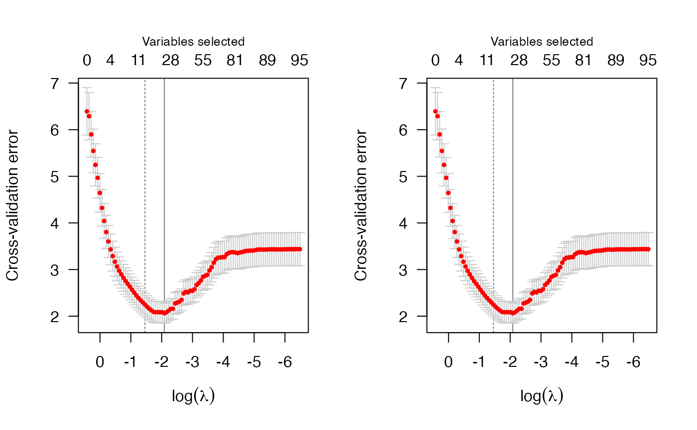

Exploring different modeling options
explore_options.Rmd
library(penalizedLMM)
library(data.table)
library(ggplot2)The plmm() function has many options, so this article
aims to provide an overview (and comparison) of several of these model
fitting options. This is a more detailed presentation than what is
provided in the “Getting started” vignette.
Options for K matrix
One of the ‘coolest’ aspects of the plmm approach is its
ability to incorporate complex relationships into the model-fitting
process. In our framework, the relational structure of a data set is
represented in the matrix we call \(\mathbf{K}\). Imagine this matrix as a
quilt with a symmetric, checkered pattern. The more complex the
relational structure of the data, the more intricate the pattern of the
quilt becomes. The relational structure in a data set could include
broad and loosely related groups, (like ancestry groups), or smaller and
highly correlated groups (like family units).
Structure
As the number of observations (e.g., number of participants)
increases, the computational time needed to calculate the entire \(\mathbf{K}\) increases exponentially. For
this reason, plmm() has several options for approximating
\(\mathbf{K}\). First, there are
research contexts in which it may be appropriate to assume the data are
from unrelated observations. For such cases, plmm() offers
the argument diag_K = T. This will use the simplest
possible ‘quilt pattern’, in which \(\mathbf{K} = \mathbf{I}_n\) with \(n\) being the number of observations.
We can visualize the impact of two approaches for choosing \(\mathbf{K}\): on the left is the default
option (as in relatedness_mat()), and on the right is the
option diag_K = T.
SVD implementation
The computation associated with calculating \(\mathbf{K}\) can become quite expensive, as the code below illustrates:
#TODO: add these plots
K_dim <- c(100, 1000, 1500, 2000, 3000, 4000)
true_times <- approx_times <- rep(NA, length(K_dim))
pb <- txtProgressBar(min = 1, max = length(K_dim), initial = 1, style = 3)
for (i in 1:length(K_dim)){
n <- K_dim[i]
true_times[i] <- svd(relatedness_mat(X = matrix(rnorm(n, 10), n, 10))) |>
system.time()
approx_times[i] <- RSpectra::svds(relatedness_mat(X = matrix(rnorm(n, 10), n, 10)),
k = floor(0.1*n)) |> system.time()
setTxtProgressBar(pb, i)
}
K_dat <- data.frame(true_times, approx_times, K_dim)
ggplot(K_dat,
aes(x = K_dim)) +
geom_line(aes(y = true_times)) +
geom_line(aes(y = approx_times), linetype = 'dashed') +
labs(x = "nrow(X): the dimension of the K matrix",
y = "SVD time in seconds")You can use choose_k() to implement truncated singular
value decomposition (SVD). This is what is shown above via
RSpectra::svds().
Options for ‘type’ in CV
There are two options for the type argument in the
cv.plmm() function: ‘response’ and ‘blup’. The latter is an
acronym stands for the Best Linear Unbiased Predictor. While the
‘response’ method attributes all the variation to …, the ‘blup’ method
…. (FILL IN).
We can compare results from these options here:
set.seed(615)
cv_admix1 <- cv.plmm(X = admix$X, y = admix$y)
set.seed(615)
cv_admix1_blup <- cv.plmm(X = admix$X, y = admix$y, type = "blup")
par(mfrow=c(1,2)); plot(cv_admix1); plot(cv_admix1_blup)
summary(cv_admix1);summary(cv_admix1_blup)
#> MCP-penalized model with n=197and p=100
#> At minimum cross-validation error (lambda=0.1241):
#> -------------------------------------------------
#> Nonzero coefficients: 25
#> Cross-validation error (deviance): 2.06
#> Scale estimate (sigma): 1.436
#> MCP-penalized model with n=197and p=100
#> At minimum cross-validation error (lambda=0.1241):
#> -------------------------------------------------
#> Nonzero coefficients: 25
#> Cross-validation error (deviance): 2.06
#> Scale estimate (sigma): 1.436Options for looking at bias and variance
It may be of interest to examine the bias and variance that result
from cross-validated model fitting. cv.plmm() has the
option returnBiasDetails; if set to TRUE, this
will make the returned object include bias (a vector) and loss (a
matrix). Moreover, for a plmm model fit, the function
v_hat will construct the approximated matrix \(\mathbf{\hat V} \equiv \eta \mathbf{K} + (1 -
\eta)\mathbf{I}_n\).